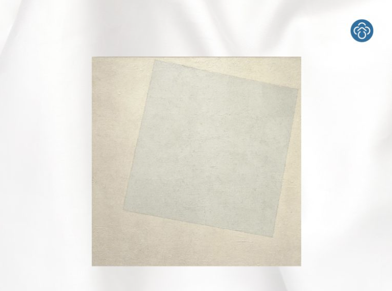

White on White
ภาพขาวทับขาวของ Kazimir Malevich เป็นภาพขาวล้วนแรกที่โด่งดังระดับโลก ผลงานสไตล์ Suprematism movement นี้มีอายุ 100 กว่าปีแล้ว แต่ยังส่งอิทธิพลสั่นสะเทือนถึงงานศิลปะในรุ่นหลัง ศิลปินรัสเซียเชื่อว่าสีขาวคือสีแห่งความบริสุทธิ์ผุดผ่อง ความสูงส่ง และความไม่สิ้นสุด จึงวาดรูปทรงสีขาวที่ล่องลอยอยู่บนพื้นหลังสีขาว
ความขาวโพลนอาจดูเรียบง่าย แต่ให้ความรู้สึกเรียบลื่นเย็นตาอยู่เสมอ เป็นเหตุให้เราทำผ้าปูที่นอนสี Winter White ขาวบริสุทธิ์เหมือนหิมะสดใหม่ในฤดูหนาว คลาสสิก สะอาดสะอ้าน ทิ้งตัวลงนอนแล้วก็นุ่มสบาย เจ้าความเรียบคลาสสิกนี้เข้าได้กับทุกห้อง ทุกยุคสมัย